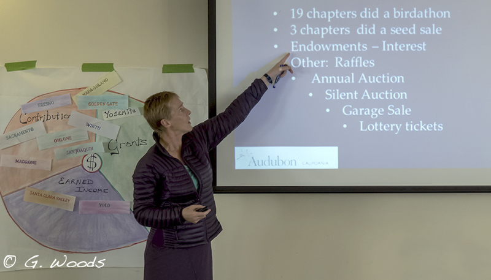

Capacity Building

Paquita Bath worked with the Mesoamerican Reef Leadership Program for three years to train leaders in project design. She facilitated workshops using the Open Standards for the Practice of Conservation, which she adapted to the needs of the MAR Leadership Program. She also acted as a mentor for leaders, helping them develop strong and marketable project proposals. Paquita has an extraordinary ability to adapt to multicultural environments. She has shown excellent oral and written communication skills in both English and Spanish throughout her participation in the program. She is professional, charismatic, and full of energy, with clarity in her ideas, patience, and a great deal of experience in capacity-building.
María Eugenia Arreola, Mesoamerican Reef Leadership Program Fondo Mexicano para la Conservación de la Naturaleza (FMCN) (FMCN)
My career has been built on the premise that long-term conservation is best achieved by active, autonomous and place-based organizations. Investments in capacity building are designed to raise the organizational and technical skills needed to engender greater conservation effectiveness. I have published a number of practical books and developed many associated training and coaching programs to assist organizations with capacity building, particularly in the areas of:
- Board Development;
- Leadership Development;
- Partnering; and
- Strategic Planning.
To assist my clients, I develop appreciative assessments, training modules and manuals to meet their needs. Examples include:
- Governance in Regional Conservation Finance Platforms: A Comparative Case Study for the Caribbean-Pacific Environmental Funds Alliance.
- Logical Frameworks and Program Assessment Tools for FUNBIO, Brazil
- Chapter Fundraising: A How-to-Guide for Audubon California
- Resource Manual for Impactful Conservation Project Design for the MAR Leadership Program, FMCN
- Fundraising Strategies for Environmental Funds for RedLAC and CAFÉ
- Conservation Partnerships for The Nature Conservancy
Helping organizations undertake self-assessments and identify the areas where they most want to increase their proficiency is often Aligning Vision's most important contribution. Once organizations are clear about where capacity investments are needed, I enjoy working with them to develop the systems, customized training, and leadership development opportunities to support new behaviors and practices.
I would like to add a few words about what an asset you are for the MAR Fund. When we engaged you a few years ago, on our contentious board governance issue, you deftly walked us through a process, parsing the issues in a through and objective way that allowed all of us participating to reach agreement. More importantly though was the way you spent time with each of us in advance of the meeting and established a spirit of trust — so that we all felt that you, as the facilitator, understood and respected our individual points of view. Now at this recent strategic planning meeting, I saw another aspect of your expertise — you did an excellent job of getting yourself up to speed about the issues we are facing to the point where you were able to tee up decisions we needed to make in an extremely efficient way — and got us to actually make them! You're such an asset — knowing us as well as you do, while being able to play the role of objective outsider. Thanks so much.
Gina de Ferrari, MAR Fund Board member Naturaleza (FMCN)
Paquita, you were an excellent communicator and facilitator for our meeting on regional governance structures. You got us involved from the beginning – we never had time to sit back. The workshop was excellent and I can tell you put all of your energy into it. You wrung us dry with the many exercises and challenges, but upon reflection I can see how much we learned. Your name alone is a door to new learning and adventure for me.
Josefina Gómez, Planning Director, MARENA, Dominican Republic

Scroll to Top